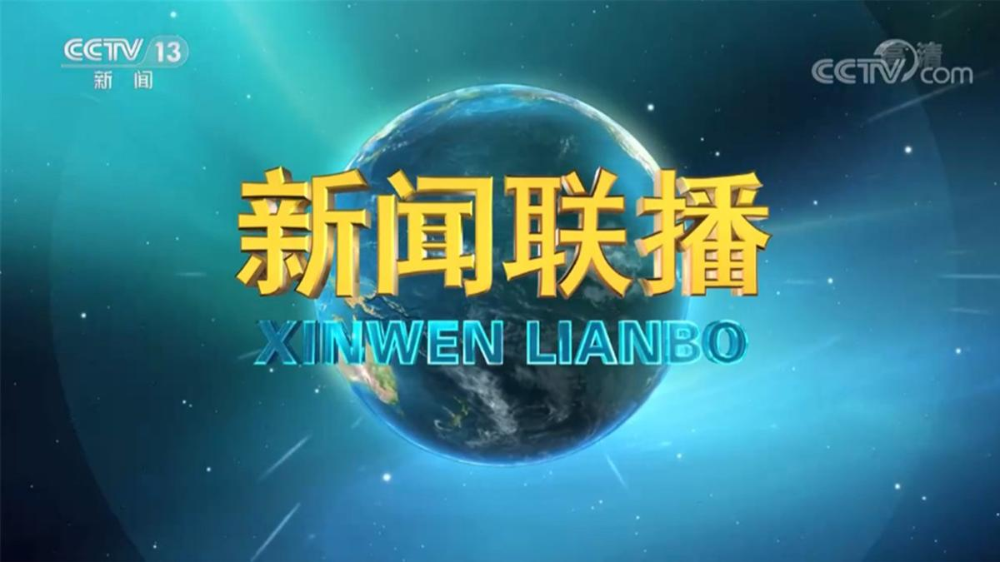
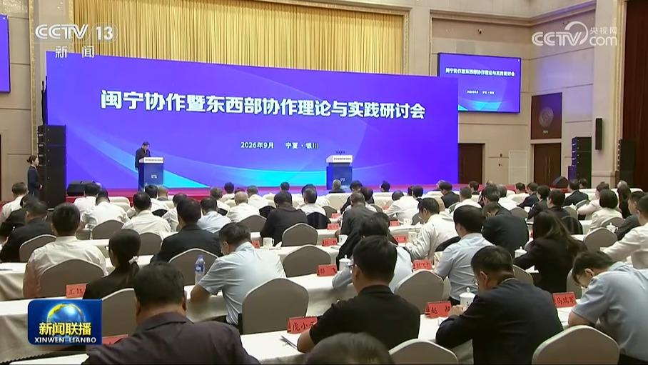
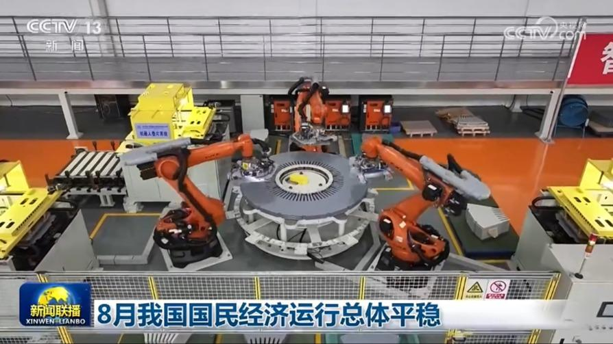
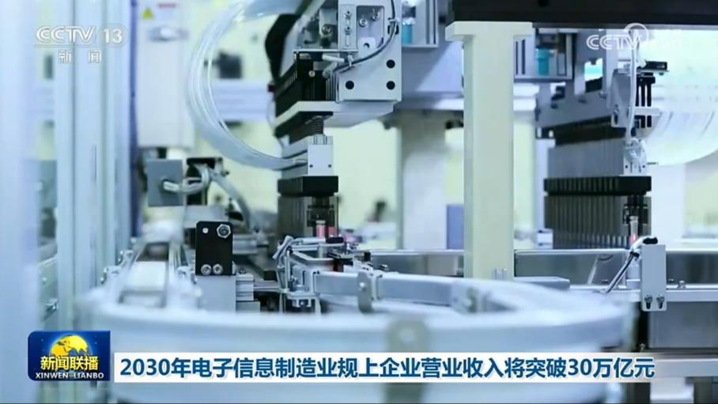
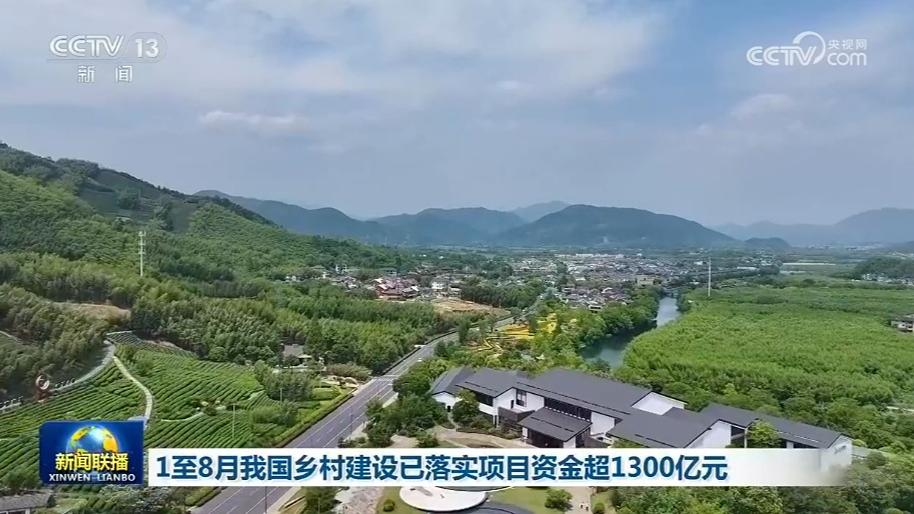
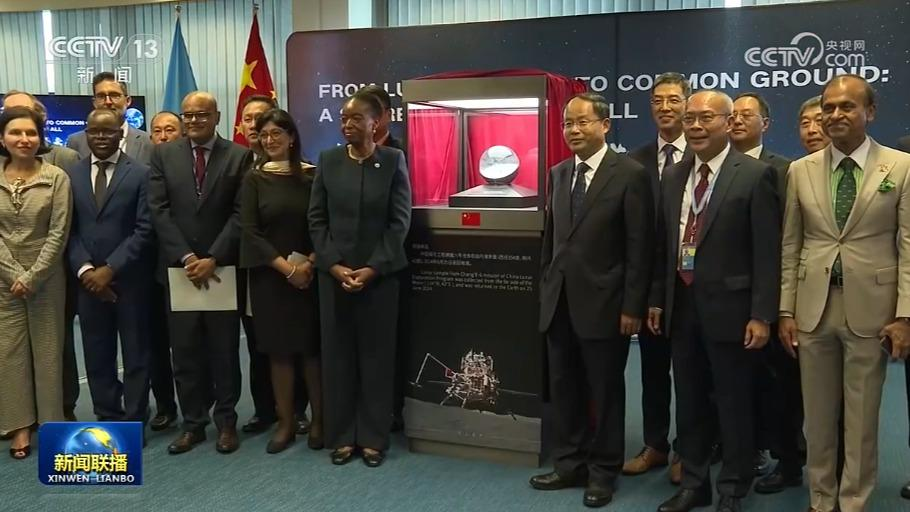
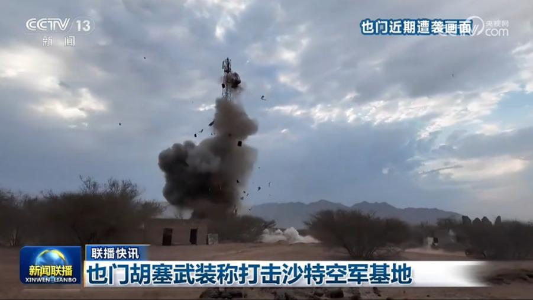

01
习近平给福建省“漳州110”全体队员回信强调 坚守为民初心矢志担当奉献 做党和人民的忠诚卫士
近日，中共中央总书记、国家主席、中央军委主席习近平给福建省“漳州110”全体队员回信，对他们予以亲切勉励并提出殷切期望。

近日，中共中央总书记、国家主席、中央军委主席习近平给福建省“漳州110”全体队员回信，对他们予以亲切勉励并提出殷切期望。
本台今天（9月15日）播发央视快评《用心用情为群众排忧解难 兢兢业业守护万家灯火》。
西部陆海新通道是我国陆海统筹，联通国际国内重要的交通、物流、产业、贸易走廊。习近平总书记指出，要大力推进西部陆海新通道建设，推动沿线地区开发开放，深度融入共建“一带一路”。今年以来，高水平建设西部陆海新通道全面提速，有力推动“陆海内外联动、东西双向互济”的对外开放新格局加速形成。
广东是中央红军长征离开中央苏区后踏入的第一个省份。在粤北群山间，广大红军指战员英勇奋战，不怕牺牲，成功突破国民党设置的封锁线。如今的粤北山区，持续融入粤港澳大湾区发展，奋力谱写高质量发展新篇章。

9月15日，闽宁协作暨东西部协作理论与实践研讨会在宁夏银川举行。与会代表认为，党的十八大以来，以习近平同志为核心的党中央引领东西部协作取得历史性成就。要深入学习领会习近平总书记关于东西部协作的重要论述精神，坚持以人民为中心的发展思想，扎实推进全体人民共同富裕。要发展文化事业和文化产业，以文化赋能西部地区经济社会发展。要深入总结闽宁协作等宝贵经验，讲好新时代东西部协作的生动故事。

国务院新闻办今天（9月15日）举行新闻发布会，国家统计局数据显示，8月份，国民经济运行总体平稳，延续动能向新、结构向优的发展态势。

工业和信息化部、国家发展改革委日前联合印发《电子信息制造业发展“十五五”规划》（以下简称《规划》）。《规划》预计，到2030年，我国电子信息制造业在全球产业格局中发挥举足轻重作用，规模以上企业营业收入将突破30万亿元，在集成电路、先进计算、消费电子、基础电子、能源电子等领域涌现一批长板技术和产品，形成具有竞争力的世界一流企业。产业研发投入强度达到3.5%。……

今年以来，我国扎实推进乡村建设行动，农村生产生活条件得到持续改善。农村公路是乡村建设的重要内容。截至目前，农村公路总里程达到470万公里。在河北省赞皇县松会村，新修道路工程正在加紧施工。原来村民出村进村只有一条狭窄的老路，大型车辆进不来，农产品外运和游客进村都受制约。新路通车后，将彻底消除交通梗阻。今年以来，当地共投资4000余万元，对28.7万平方米道路实施硬化并安装路灯。
拥有2500多年建城史的浙江绍兴，是一座名副其实的“没有围墙的博物馆”。在古城保护中，如何平衡历史风貌与现代生活呢？绍兴有一条全长仅1.5公里的历史街区——仓桥直街，用20多年的探索走出了一条“留人见物有生活”的保护之路。
8月份一二三线城市商品住宅销售价格同比降幅继续收窄

中国国家航天局、中国常驻维也纳联合国和其他国际组织代表团以及联合国外空司14日在维也纳联合国总部举行交接仪式，中国将“嫦娥六号”采集的人类首批月背月壤样品正式赠送联合国，并将在此进行永久展出。中国代表表示，中方此举是以实际行动践行习近平主席提出的四大全球倡议，中国愿同各国分享航天发展成果。
美国总统特朗普14日发文称，伊朗迫切希望与美方达成协议，美国对与伊朗谈判持开放态度。特朗普还称，美国正在帮助油轮通过霍尔木兹海峡，各国应当在冲突结束后对美国进行补偿。

也门胡塞武装称打击沙特空军基地